Abstract
Accessing and integrating data from the Metabolomics Workbench (MW) is often cumbersome with the existing tools. This interface simplifies programmatic access to MW’s REST API, enabling efficient retrieval of study metadata, sample information, and compound annotations. By integrating MW’s extensive datasets with R, it enhances data exploration, reproducibility, and seamless integration into bioinformatics workflows. This tool provides a streamlined approach for the users in metabolomics and systems biology to analyze large-scale metabolomics data with ease.Introduction
The mwbenchr package provides a R interface to the Metabolomics Workbench REST API, enabling programmatic access to one of the largest metabolomics data repositories. This vignette demonstrates how to use mwbenchr to retrieve study data, compound information, and perform common metabolomics data analysis tasks.
What is Metabolomics Workbench?
The Metabolomics Workbench is a public repository for metabolomics data, metadata, and analysis tools. It contains thousands of studies across various species, sample types, and analytical platforms, making it an invaluable resource for metabolomics research.
Getting Started
Creating a Client
All interactions with the API begin by creating a client object:
# Caching enabled client (recommended for repeated queries: enable caching)
client <- mw_rest_client(cache = TRUE)
# Custom client configuration
client <- mw_rest_client(
cache = TRUE,
cache_dir = tempdir(),
timeout = 60
)
# Basic client with default settings
client <- mw_rest_client()
client
#> Metabolomics Workbench REST Client
#> Base URL: https://www.metabolomicsworkbench.org/rest
#> Caching: Disabled
#> Timeout: 30 secondsWorking with Studies
Discovering Studies
Start by getting an overview of available studies:
# Obtain all studies (this returns a lot of data)
all_studies <- get_study_summary(client)
head(all_studies, 3)
#> # A tibble: 3 × 6
#> study_id study_title species institute analysis_type number_of_samples
#> <chr> <chr> <chr> <chr> <chr> <chr>
#> 1 ST004148 Surface Acoustic W… Homo s… Universi… LC-MS 42
#> 2 ST004144 Metabolic rewiring… Homo s… Brunel U… LC-MS 294
#> 3 ST004134 Metabolomic analys… Mus mu… Indian I… LC-MS 13
colnames(all_studies)
#> [1] "study_id" "study_title" "species"
#> [4] "institute" "analysis_type" "number_of_samples"Filtering and Exploring Studies
# Filter for human studies
human_studies <- all_studies %>%
filter(grepl("Human", study_title, ignore.case = TRUE)) %>%
select(
study_id, study_title # , submit_date, last_modified
)
# Look for specific topics
diabetes_studies <- all_studies %>%
filter(grepl("diabetes|glucose", study_title, ignore.case = TRUE))
print(paste("Found", nrow(diabetes_studies), "diabetes-related studies"))
#> [1] "Found 113 diabetes-related studies"Getting Detailed Study Information
Once you’ve identified studies of interest, get detailed information:
# Get experimental factors (sample metadata) for a study
study_id <- "ST000001"
factors <- get_study_factors(client, study_id)
head(factors)
#> # A tibble: 6 × 6
#> study_id local_sample_id sample_source factors mb_sample_id raw_data
#> <chr> <chr> <chr> <chr> <chr> <chr>
#> 1 ST000001 LabF_115904 Plant Arabidopsis Geno… SA000019 ""
#> 2 ST000001 LabF_115909 Plant Arabidopsis Geno… SA000020 ""
#> 3 ST000001 LabF_115914 Plant Arabidopsis Geno… SA000021 ""
#> 4 ST000001 LabF_115919 Plant Arabidopsis Geno… SA000022 ""
#> 5 ST000001 LabF_115924 Plant Arabidopsis Geno… SA000023 ""
#> 6 ST000001 LabF_115929 Plant Arabidopsis Geno… SA000024 ""
# Obtain the list of metabolites measured
metabolites <- get_study_metabolites(client, study_id)
head(metabolites)
#> # A tibble: 6 × 5
#> study_id analysis_id analysis_summary metabolite_name refmet_name
#> <chr> <chr> <chr> <chr> <chr>
#> 1 ST000001 AN000001 GCMS positive ion mode 1,2,4-benzenetriol 1,2,4-Trih…
#> 2 ST000001 AN000001 GCMS positive ion mode 1-monostearin MG 18:0/0:…
#> 3 ST000001 AN000001 GCMS positive ion mode 2-hydroxyvaleric acid 2-Hydroxyv…
#> 4 ST000001 AN000001 GCMS positive ion mode 3-phosphoglycerate 3-Phosphog…
#> 5 ST000001 AN000001 GCMS positive ion mode 5-hydroxynorvaline NI… 2-Amino-5-…
#> 6 ST000001 AN000001 GCMS positive ion mode adenosine Adenosine
# The complete data matrix
study_data <- get_study_data(client, study_id)
dim(study_data)
#> [1] 2448 8Advanced Study Search with MetStat
The MetStat functionality allows sophisticated searching across multiple criteria:
# Search for human blood LCMS studies
human_blood_lcms <- search_metstat(client,
analysis_type = "LCMS",
species = "Human",
sample_source = "Blood"
)
# Search for mouse liver studies with any analytical method
mouse_liver <- search_metstat(client,
species = "Mouse",
sample_source = "Liver"
)
# Search for studies containing specific metabolites
glucose_studies <- search_metstat(client, refmet_name = "Glucose")
# Complex search combining multiple criteria
complex_search <- search_metstat(client,
analysis_type = "LCMS",
polarity = "POSITIVE",
species = "Human",
sample_source = "Urine"
)Working with Compounds
Retrieving Compound Information
Get detailed information about specific compounds:
# Get compound by registry number
compound_1 <- get_compound_by_regno(client, "1")
print(compound_1$systematic_name)
#> NULL
# Get compound by PubChem CID
glucose_pubchem <- get_compound_by_pubchem_cid(client, "5793")
# Get specific fields only
compound_name <- get_compound_by_regno(client, "1", fields = "name")
# Get classification hierarchy
classification <- get_compound_classification(client, "regno", "1")
head(classification)
#> # A tibble: 1 × 5
#> regno name sys_name lm_category lm_main_class
#> <chr> <chr> <chr> <chr> <chr>
#> 1 1 2-methoxy-12-methyloctadec-17-en-5-y… 2-metho… Fatty Acyl… Other Fatty …Downloading Structure Files
# Download MOL file
mol_content <- download_compound_structure(client, "regno", "1", "molfile")
# Save to file
# writeLines(mol_content, "glucose.mol")
# Download SDF format
sdf_content <- download_compound_structure(client, "regno", "1", "sdf")RefMet Integration
RefMet provides standardized metabolite nomenclature:
# Get RefMet information for a metabolite
glucose_refmet <- get_refmet_by_name(client, "Glucose")
# Standardize alternative names
standardized <- standardize_to_refmet(client, "D-glucose")
print(standardized$refmet_name)
#> [1] "Glucose"
# Get all RefMet names (large dataset - use caching!)
client_cached <- mw_rest_client(cache = TRUE)
# all_refmet <- get_all_refmet_names(client_cached)Mass Spectrometry Tools
Searching by Mass
Find compounds based on accurate mass measurements:
# Search in RefMet database
mass_matches <- search_by_mass(client,
db = "REFMET",
mz = 180.063,
ion_type = "M+H",
tolerance = 0.01
)
head(mass_matches)
#> # A tibble: 6 × 10
#> `Input m/z` `Matched m/z` Delta Name `Systematic name` Formula Ion Category
#> <dbl> <dbl> <dbl> <chr> <chr> <chr> <chr> <chr>
#> 1 180. 180. 4e-4 1D-c… (1R,2R,3R,4R,5S,… C6H12O6 Neut… Organic…
#> 2 180. 180. 4e-4 Allo… (3S,4S,5R,6S)-6-… C6H12O6 Neut… Organic…
#> 3 180. 180. 4e-4 D-Ta… (3S,4S,5R)-1,3,4… C6H12O6 Neut… Organic…
#> 4 180. 180. 4e-4 Fruc… (3S,4R,5R)-1,3,4… C6H12O6 Neut… Carbohy…
#> 5 180. 180. 4e-4 Gala… (3R,4S,5R,6R)-6-… C6H12O6 Neut… Carbohy…
#> 6 180. 180. 4e-4 Gluc… (3R,4S,5S,6R)-6-… C6H12O6 Neut… Carbohy…
#> # ℹ 2 more variables: `Main class` <chr>, `Sub class` <chr>
# Search in lipids database with different ion type
lipid_matches <- search_by_mass(client,
db = "LIPIDS",
mz = 760.585,
ion_type = "M+H",
tolerance = 0.05
)
# Compare results across databases
mb_matches <- search_by_mass(client,
db = "MB",
mz = 180.063,
ion_type = "M+H",
tolerance = 0.01
)Calculating Exact Masses
Calculate theoretical masses for lipid species:
# Calculate exact mass for phosphatidylcholine
pc_mass <- calculate_exact_mass(client, "PC(34:1)", "M+H")
print(paste("PC(34:1) [M+H]+ =", pc_mass$mz))
#> [1] "PC(34:1) [M+H]+ = 760.585077"
# Different ion types
pc_sodium <- calculate_exact_mass(client, "PC(34:1)", "M+Na")
pc_negative <- calculate_exact_mass(client, "PC(34:1)", "M-H")
# Compare masses
mass_comparison <- data.frame(
ion_type = c("M+H", "M+Na", "M-H"),
exact_mass = c(pc_mass$mz, pc_sodium$mz, pc_negative$mz)
)
print(mass_comparison)
#> ion_type exact_mass
#> 1 M+H 760.5851
#> 2 M+Na 782.5670
#> 3 M-H 758.5705Data Integration and Analysis Workflows
Complete Metabolomics Study Analysis
Here’s a complete workflow for analyzing a metabolomics study:
# 1. Find relevant studies
studies <- search_metstat(client,
analysis_type = "LCMS",
species = "Human",
sample_source = "Blood"
)
# Select a study of interest
target_study <- studies$study[1]
# 2. Get study metadata
study_info <- get_study_summary(client, target_study)
factors <- get_study_factors(client, target_study)
metabolites <- get_study_metabolites(client, target_study)
# 3. Get the data matrix
data_matrix <- get_study_data(client, target_study)
# 4. Basic data exploration
cat("Study:", study_info$study_title, "\n")
#> Study: Surface Acoustic Wave Hemolysis Assay for Evaluating Stored Red Blood Cells
cat("Number of samples:", ncol(data_matrix) - 7, "\n") # Subs. metadata columns
#> Number of samples: 1
cat("Number of metabolites:", nrow(data_matrix), "\n")
#> Number of metabolites: 7014
# 5. Data processing
numeric_data <- data_matrix %>%
select(-c(study_id:units)) %>% # Remove metadata columns
mutate(across(everything(), as.numeric))
# Calculate basic statistics
metabolite_stats <- data_matrix %>%
select(metabolite_name, refmet_name) %>%
bind_cols(
mean_intensity = rowMeans(numeric_data, na.rm = TRUE),
cv = apply(numeric_data, 1, function(x) {
sd(x, na.rm = TRUE) / mean(x, na.rm = TRUE)
})
)
head(metabolite_stats)
#> # A tibble: 6 × 4
#> metabolite_name refmet_name mean_intensity cv
#> <chr> <chr> <dbl> <dbl>
#> 1 10-Formyldihydrofolate 10-Formyldihydrofolic acid NaN NA
#> 2 10-Formyldihydrofolate 10-Formyldihydrofolic acid 11905. NA
#> 3 10-Formyldihydrofolate 10-Formyldihydrofolic acid 14177. NA
#> 4 10-Formyldihydrofolate 10-Formyldihydrofolic acid 13401. NA
#> 5 10-Formyldihydrofolate 10-Formyldihydrofolic acid 35540. NA
#> 6 10-Formyldihydrofolate 10-Formyldihydrofolic acid 15646. NAStandardizing Metabolite Names
Standardize metabolite names across different studies:
# Get metabolites from multiple studies
study1_metabolites <- get_study_metabolites(client, "ST000001")
study2_metabolites <- get_study_metabolites(client, "ST000002")
# Combine and get unique names
all_metabolite_names <- unique(c(
study1_metabolites$metabolite_name,
study2_metabolites$metabolite_name
))
# Standardize names (in practice, you'd do this in batches)
standardized_names <- lapply(all_metabolite_names[1:5], function(name) {
tryCatch(
{
result <- standardize_to_refmet(client, name)
data.frame(
original_name = name,
refmet_name = result$refmet_name %||% NA,
stringsAsFactors = FALSE
)
},
error = function(e) {
data.frame(
original_name = name,
refmet_name = NA,
stringsAsFactors = FALSE
)
}
)
})
standardization_results <- do.call(rbind, standardized_names)
print(standardization_results)
#> original_name refmet_name
#> 1 1,2,4-benzenetriol 1,2,4-Trihydroxybenzene
#> 2 1-monostearin MG 18:0/0:0/0:0
#> 3 2-hydroxyvaleric acid 2-Hydroxyvaleric acid
#> 4 3-phosphoglycerate 3-Phosphoglyceric acid
#> 5 5-hydroxynorvaline NIST 2-Amino-5-hydroxypentanoic acidCross-Study Comparisons
Compare metabolite coverage across studies:
# Get metabolites from multiple studies
studies_to_compare <- c("ST000001", "ST000002", "ST000003")
metabolite_coverage <- lapply(studies_to_compare, function(study_id) {
metabolites <- get_study_metabolites(client, study_id)
data.frame(
study_id = study_id,
metabolite_count = nrow(metabolites),
unique_refmet = length(unique(metabolites$refmet_name)),
stringsAsFactors = FALSE
)
})
coverage_df <- do.call(rbind, metabolite_coverage)
print(coverage_df)
#> study_id metabolite_count unique_refmet
#> 1 ST000001 102 99
#> 2 ST000002 142 141
#> 3 ST000003 51 51Visualization Examples
Study Statistics
# Visualize study submission over time
studies_with_dates <- all_studies %>%
filter(!is.na(submit_date)) %>%
mutate(
submit_year = as.numeric(format(as.Date(submit_date), "%Y")),
analysis_type = case_when(
grepl("LCMS", study_title, ignore.case = TRUE) ~ "LC-MS",
grepl("GCMS", study_title, ignore.case = TRUE) ~ "GC-MS",
grepl("NMR", study_title, ignore.case = TRUE) ~ "NMR",
TRUE ~ "Other"
)
) %>%
filter(submit_year >= 2010 & submit_year <= 2023)
# Plot submissions by year and analysis type
ggplot(studies_with_dates, aes(x = submit_year, fill = analysis_type)) +
geom_bar(position = "stack") +
labs(
title = "Metabolomics Workbench Study Submissions by Year",
x = "Submission Year",
y = "Number of Studies",
fill = "Analysis Type"
) +
theme_minimal()Mass Accuracy Visualization
# Compare mass accuracy across different tolerances
tolerance_values <- c(0.001, 0.005, 0.01, 0.05, 0.1)
target_mz <- 180.063
mass_accuracy_results <- lapply(tolerance_values, function(tol) {
matches <- search_by_mass(client, "REFMET", target_mz, "M+H", tol)
data.frame(
tolerance = tol,
matches = nrow(matches),
stringsAsFactors = FALSE
)
})
accuracy_df <- do.call(rbind, mass_accuracy_results)
ggplot(accuracy_df, aes(x = tolerance, y = matches)) +
geom_line() +
geom_point() +
scale_x_log10() +
labs(
title = "Number of Mass Matches vs. Tolerance",
x = "Mass Tolerance (Da, log scale)",
y = "Number of Matches"
) +
theme_minimal()
Error Handling and Best Practices
Robust API Calls
Making safely API calls with retries
safe_api_call <- function(func, ..., max_attempts = 3) {
for (attempt in 1:max_attempts) {
result <- tryCatch(
{
func(...)
},
error = function(e) {
if (attempt == max_attempts) {
stop(
"API call failed after ", max_attempts, " attempts: ",
e$message
)
}
message("Attempt ", attempt, " failed, retrying...")
Sys.sleep(1)
NULL
}
)
if (!is.null(result)) {
return(result)
}
}
}
study_data <- safe_api_call(get_study_summary, client, "ST000001")Batch Processing
Processing multiple studies efficiently
process_studies <- function(client, study_ids, max_concurrent = 5) {
results <- list()
for (i in seq_along(study_ids)) {
study_id <- study_ids[i]
cat("Processing study", i, "of", length(study_ids), ":", study_id, "\n")
tryCatch(
{
summary <- get_study_summary(client, study_id)
metabolites <- get_study_metabolites(client, study_id)
results[[study_id]] <- list(
summary = summary,
metabolite_count = nrow(metabolites),
metabolites = metabolites$metabolite_name
)
if (i %% max_concurrent == 0) {
Sys.sleep(1)
}
},
error = function(e) {
warning("Failed to process study ", study_id, ": ", e$message)
results[[study_id]] <- list(error = e$message)
}
)
}
return(results)
}
# simple usage (with a small subset)
study_subset <- all_studies$study_id[1:3]
batch_results <- process_studies(client, study_subset)
#> Processing study 1 of 3 : ST004148
#> Processing study 2 of 3 : ST004144
#> Processing study 3 of 3 : ST004134Performance Optimization
Using Caching
# set up caching for expensive operations
cached_client <- mw_rest_client(
cache = TRUE,
cache_dir = file.path(tempdir(), "mwbenchr_cache")
)
refmet_data <- get_all_refmet_names(cached_client) # Large dataset
study_list <- get_study_summary(cached_client) # Frequently accessed
# subsequent calls will use cached data
refmet_data_cached <- get_all_refmet_names(cached_client) # Fast!Memory Management
# For large datasets, process in chunks
process_large_study <- function(client, study_id) {
# Get metadata first (small)
summary <- get_study_summary(client, study_id)
metabolites <- get_study_metabolites(client, study_id)
# Check data size before loading full matrix
n_metabolites <- nrow(metabolites)
if (n_metabolites > 1000) {
warning(
"Large study detected (", n_metabolites, " metabolites). ",
"Consider processing in chunks."
)
}
# Load full data only if reasonable size
if (n_metabolites <= 5000) {
data_matrix <- get_study_data(client, study_id)
return(list(
summary = summary,
metabolites = metabolites,
data = data_matrix
))
} else {
return(list(
summary = summary,
metabolites = metabolites,
data = NULL,
note = "Data matrix too large - not loaded"
))
}
}Session Info
sessioninfo::session_info()
#> ─ Session info ───────────────────────────────────────────────────────────────
#> setting value
#> version R version 4.5.1 (2025-06-13)
#> os Ubuntu 24.04.3 LTS
#> system x86_64, linux-gnu
#> ui X11
#> language en
#> collate C.UTF-8
#> ctype C.UTF-8
#> tz UTC
#> date 2025-08-31
#> pandoc 3.1.11 @ /opt/hostedtoolcache/pandoc/3.1.11/x64/ (via rmarkdown)
#> quarto NA
#>
#> ─ Packages ───────────────────────────────────────────────────────────────────
#> package * version date (UTC) lib source
#> BiocManager 1.30.26 2025-06-05 [1] RSPM
#> BiocStyle * 2.36.0 2025-04-15 [1] Bioconduc~
#> bit 4.6.0 2025-03-06 [1] RSPM
#> bit64 4.6.0-1 2025-01-16 [1] RSPM
#> bookdown 0.44 2025-08-21 [1] RSPM
#> bslib 0.9.0 2025-01-30 [1] RSPM
#> cachem 1.1.0 2024-05-16 [1] RSPM
#> cli 3.6.5 2025-04-23 [1] RSPM
#> crayon 1.5.3 2024-06-20 [1] RSPM
#> curl 7.0.0 2025-08-19 [1] RSPM
#> desc 1.4.3 2023-12-10 [1] RSPM
#> digest 0.6.37 2024-08-19 [1] RSPM
#> dplyr * 1.1.4 2023-11-17 [1] RSPM
#> evaluate 1.0.5 2025-08-27 [1] RSPM
#> farver 2.1.2 2024-05-13 [1] RSPM
#> fastmap 1.2.0 2024-05-15 [1] RSPM
#> fs 1.6.6 2025-04-12 [1] RSPM
#> generics 0.1.4 2025-05-09 [1] RSPM
#> ggplot2 * 3.5.2 2025-04-09 [1] RSPM
#> glue 1.8.0 2024-09-30 [1] RSPM
#> gtable 0.3.6 2024-10-25 [1] RSPM
#> htmltools 0.5.8.1 2024-04-04 [1] RSPM
#> httr2 1.2.1 2025-07-22 [1] RSPM
#> jquerylib 0.1.4 2021-04-26 [1] RSPM
#> jsonlite 2.0.0 2025-03-27 [1] RSPM
#> knitr 1.50 2025-03-16 [1] RSPM
#> labeling 0.4.3 2023-08-29 [1] RSPM
#> lifecycle 1.0.4 2023-11-07 [1] RSPM
#> magrittr 2.0.3 2022-03-30 [1] RSPM
#> mwbenchr * 0.0.1 2025-08-31 [1] local
#> pillar 1.11.0 2025-07-04 [1] RSPM
#> pkgconfig 2.0.3 2019-09-22 [1] RSPM
#> pkgdown 2.1.3 2025-05-25 [1] any (@2.1.3)
#> purrr 1.1.0 2025-07-10 [1] RSPM
#> R6 2.6.1 2025-02-15 [1] RSPM
#> ragg 1.4.0 2025-04-10 [1] RSPM
#> rappdirs 0.3.3 2021-01-31 [1] RSPM
#> RColorBrewer 1.1-3 2022-04-03 [1] RSPM
#> rlang 1.1.6 2025-04-11 [1] RSPM
#> rmarkdown 2.29 2024-11-04 [1] RSPM
#> sass 0.4.10 2025-04-11 [1] RSPM
#> scales 1.4.0 2025-04-24 [1] RSPM
#> sessioninfo 1.2.3 2025-02-05 [1] any (@1.2.3)
#> systemfonts 1.2.3 2025-04-30 [1] RSPM
#> textshaping 1.0.1 2025-05-01 [1] RSPM
#> tibble 3.3.0 2025-06-08 [1] RSPM
#> tidyselect 1.2.1 2024-03-11 [1] RSPM
#> tzdb 0.5.0 2025-03-15 [1] RSPM
#> utf8 1.2.6 2025-06-08 [1] RSPM
#> vctrs 0.6.5 2023-12-01 [1] RSPM
#> vroom 1.6.5 2023-12-05 [1] RSPM
#> withr 3.0.2 2024-10-28 [1] RSPM
#> xfun 0.53 2025-08-19 [1] RSPM
#> yaml 2.3.10 2024-07-26 [1] RSPM
#>
#> [1] /home/runner/work/_temp/Library
#> [2] /opt/R/4.5.1/lib/R/site-library
#> [3] /opt/R/4.5.1/lib/R/library
#> * ── Packages attached to the search path.
#>
#> ──────────────────────────────────────────────────────────────────────────────Conclusion
We demonstrated the key functionality of mwbenchr for
accessing and analyzing metabolomics data from the Metabolomics
Workbench.
Here are some key takeaways:
-
Client Setup: Always start with
mw_rest_client(), enable caching for better performance -
Study Discovery: Use
get_study_summary()andsearch_metstat()to find relevant studies - Data Retrieval: Get detailed study information with study-specific functions
- Compound Analysis: Use compound functions and mass spectrometry tools for molecular identification
- Name Standardization: Leverage RefMet for consistent metabolite naming
- Best Practices: Implement error handling, use caching, and consider rate limiting
For more information, see the function documentation
(?function_name) and visit the Metabolomics Workbench
website.